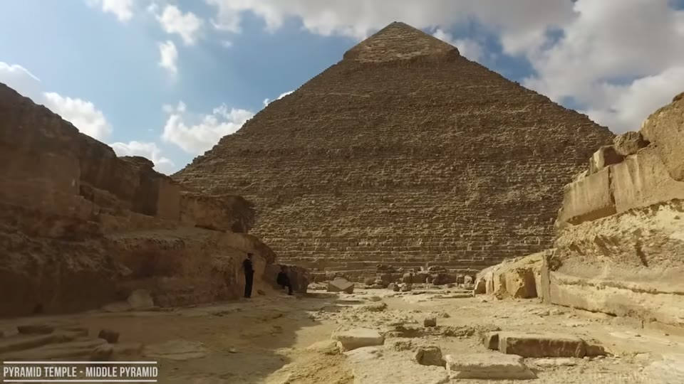
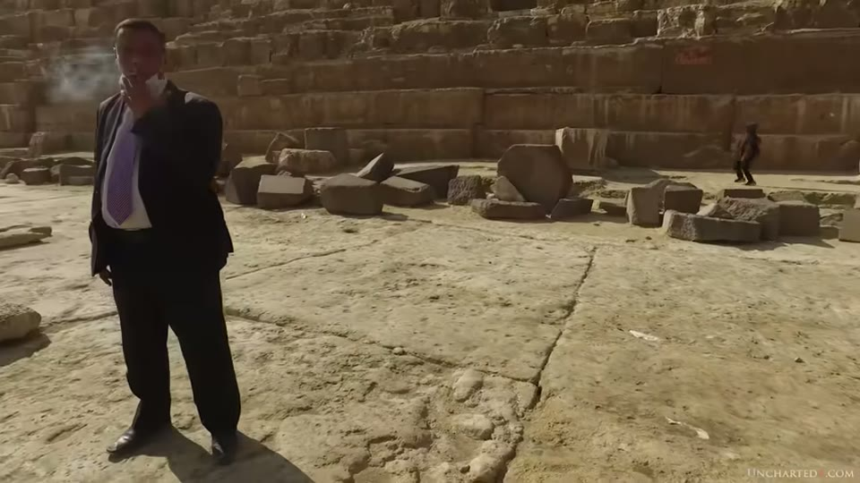
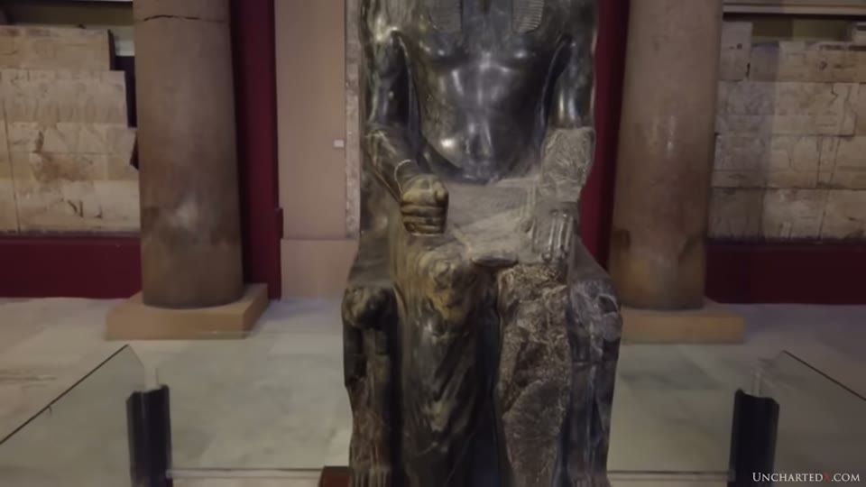
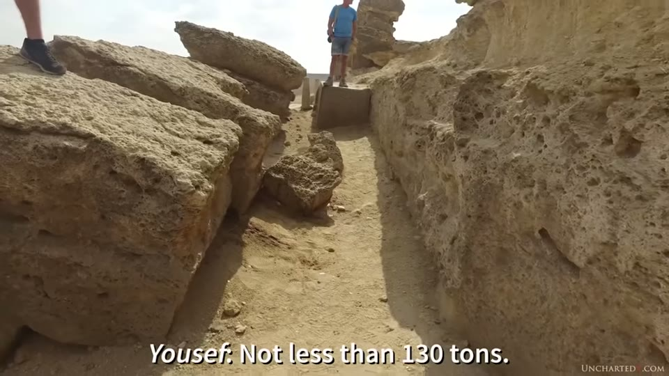

UnchartedX
The Middle Pyramid Megalithic Complex - Vastly Ancient, was this the FIRST to be Built at Giza?
Ben van Kerkwyk · 53 min · watch on YouTube · summarised 2026-10-05
Part one of a two-part series on the middle pyramid at Giza, the structure usually called the pyramid of Khafre. The presenter says at the outset that he will call it the middle pyramid throughout rather than the second pyramid or Khafre's pyramid 05:00–05:08. The argument has three strands: that the pyramid and the monuments at the other end of its causeway are one connected complex, that the writing on which the attribution rests is not on the pyramid at all, and that several features of the structure — its block sizes, its foundations, its enclosure — are engineering problems worth examining on their own terms. A post-credits sidebar on the cartouche in the Great Pyramid's relieving chambers runs for six minutes after the producer credits 46:04–52:40.
What is there, and what is not
The opening states that no hieroglyphs or markings have ever been found in or on the middle pyramid, and no mummies, and that it is nonetheless labelled conclusively as the tomb of Khafre 00:50–01:02. The attribution as the second pyramid built at Giza is described as far from certain 00:46–00:50.
The figures given for the two pyramids: the middle pyramid stands 136 m, around 10 m shorter than the Great Pyramid, but sits on ground about 10 m higher, so it can look taller; because casing is missing from the Great Pyramid's peak, the difference today is about 2 m 05:21–05:46. Base length 215.5 m or 706 ft against 230.3 m or 755.6 ft; angle 53° 10′ against 51° 50′, and therefore considerably less mass 05:48–06:12. He notes he has often seen the middle pyramid mistaken for the Great Pyramid in tourist images, because of its crown of intact casing 05:13–05:21.
The complaint that carries the section is about attention rather than evidence. No modern survey of the pyramid's chambers and passages has been conducted, so analysis has to rely on conflicting accounts and measurements now over 150 years old 01:26–01:39. The complex and causeway are put forward as an obvious target for ground-penetrating radar or muon detection of the kind used by the ScanPyramids project inside the Great Pyramid, and the point made is that the technology exists and has not been applied here 01:43–02:08. The same institutional-access argument runs through the Sphinx Temple video, where the structure filmed is welded shut and the drilling and scanning history is the subject: the Sphinx Temple entry.
First modern explorations
Giovanni Belzoni found the upper entrance in 1818, with the man the printed source calls "the Greek Athanasi", having spent £150 and a month at work with his crew 03:43–03:56. The account quoted is from volume five of the Italian architectural survey of the Memphite pyramids by V. Maragioglio and C. Rinaldi, published 1966 — "the pyramid of Khafre was probably violated as early as the First Intermediate Period, and the Arabs certainly penetrated its apartments. It has always been put in the shade of its largest sister, so that up to the first years of the 19th century, no attempt was made to reopen its underground chambers" 04:10–04:33. The same passage records that Caviglia made an attempt to open the pyramid and very soon gave up the idea 04:33–04:40.
The book itself is held on screen beside the quotation, and the title page settles the names the auto-captions mangle: V. MARAGIOGLIO and C. RINALDI, L'Architettura delle Piramidi Menfite. Two things on that page are not read out. The volume shown is Parte V — Tavole, the plates volume, while the passage quoted is English prose; and the printed text calls the king Chephren throughout, not Khafre.
Caviglia's work on the other side of the causeway, in the same decade and alongside Henry Salt, is the subject of the Sphinx origins entry, which also records a one-year discrepancy in the date given for his Sphinx excavation across two videos on this channel.
Illustrations from the same 1966 publication are used for the parts of the complex that are gone: a pavement extending all the way round the pyramid, and a stone perimeter wall put at around 8 m or 26 ft tall and a little over 3 m or 10 ft thick 06:39–07:05.
The plate carrying those figures is shown full-frame, and it says more about them than the narration does. The wall is drawn entirely in dashed line, as a reconstruction rather than a surveyed solid, and its height dimension is annotated in Italian — the word reads as presunto, presumed — beside the figure 8.00. The width on the plate is 3.15. The narration's "thought to have been around 8 m" matches the label, but the label itself is never mentioned.


The 1966 architectural survey the history and the perimeter wall come from.
The complex, and what connects it
The structures named as parts of the middle pyramid's complex: the pavement; the pyramid temple to the east, also called the mortuary or funeral temple, described as gigantic blocks of limestone and granite showing tremendous erosion; the causeway, 500 m or 1,640 ft long, once fully covered, with a large number of shafts along its length, some descending over 100 ft into bedrock with unexplored tunnels leading off; and at its far end the Great Sphinx in its enclosure, the Valley Temple and the Sphinx Temple 07:05–07:55.


The structures said to form one connected complex, and the pavement joining them.
The physical connections are then listed. The pavement joins pyramid to pyramid temple to causeway; the causeway, originally covered, penetrates the Valley Temple and is built into it 09:52–10:08. The core limestone blocks of the Valley Temple have been geologically matched to the stone of the Sphinx enclosure, which he reports as suggesting the blocks were cut as the Sphinx was carved; the Sphinx Temple came after the Valley Temple, because part of the Valley Temple's northern enclosure wall was removed and incorporated into the Sphinx Temple's southern wall 10:08–10:30. He attributes all of this to Mark Lehner and the Ancient Egypt Research Associates group, and says "none of this is controversial, by the way" 10:30–10:40.
A different account of how the Sphinx Temple came to be in its present state is argued on Curious Being, from 1926 excavation photographs: that the temple was reassembled piecemeal while still buried, and that a gap existed in the wall now said to have no door — the Sphinx Temple wall entry. The two are not reconciled here.
The inference drawn from the connections is the load-bearing step of the whole video: if the structures are one project, then evidence for the age of any one of them bears on all of them 10:40–10:52.
Belzoni on the same question, 1822
The quotation used to support the single-project reading is from Belzoni's Narratives of 1822, describing his excavation on the east side of the pyramid — the lower part of a large temple within 50 ft of the pyramid's base, exterior walls "formed of enormous blocks of stone" with some in the porticoes 24 ft long, and the interior "built with calcareous stones of various sizes, but many finely cut at the angles and is probably much older than the exterior wall, which bears the appearance of as great antiquity as the pyramids" 08:15–08:49. Belzoni describes cutting through more than 40 ft of accumulated material to reach the base, finding a flat pavement cut out of solid rock, and tracing it to the temple; he declares his opinion that the pavement goes all around the pyramid, and that "it appeared to me that the Sphinx, the temple, and the pyramid were all three erected at the same time, and they all appear to be in one line and of equal antiquity" 08:49–09:44.
The reading given of the interior/exterior sentence is that Belzoni took the granite exterior to be as old as the pyramids and the limestone interior to be older still 09:29–09:46. The same two-stage pattern is then reported for the Valley Temple, where the presenter says Robert Schoch observed that the granite casing has been shaped to fit the erosion already present on the limestone behind it — which, if so, requires the core to have stood exposed for a long time before being cased 09:46–10:14. His own position is that the granite work was most likely also done before the dynastic civilisation 10:14–10:22.
Belzoni's book is put on screen the same way, the engraved title page beside the page being quoted. The title page carries an edition statement that is not mentioned: THIRD EDITION, IN TWO VOLUMES, VOL. I, London, John Murray. The narration gives only "his narratives from 1822".

The printed source for the first modern account of the pyramid's complex.
The age argument, and whose work it rests on
The geological case for an older Sphinx is not re-argued. He refers to the work of John Anthony West and the geologist Robert Schoch on the erosion of the enclosure walls and the Sphinx's body, says it is well documented and does not need repeating, and adds his own assessment: that anyone who looks into it with an open mind "should find it entirely convincing", that Lehner and Hawass will never admit it, and that their rebuttals "are truly weak" 11:11–11:45.
The supporting material he lists alongside it 11:45–13:10:
- The Inventory Stela, which he says suggests the Sphinx and Valley Temple were already standing and in need of repair during the Old Kingdom reigns of Khufu and Khafre.
- Old Kingdom repairs on the Sphinx's body, present on the monument.
- The recarving of the head at some point in antiquity, which orthodox Egyptologists hold to be a carving of Khafre — the same Khafre said to have built the Sphinx, during the same period in which it was evidently being repaired. He puts this as a challenge rather than an argument: "just try and untwist the logic in that statement, I dare you."
- Robert Bauval's Orion correlation, later co-authored with Graham Hancock as Keeper of Genesis, aligning the Sphinx as a lion with the constellation Leo at around 10,500 BC on the precessional cycle — a date he notes matches Schoch's geological figure.
The newest item is a book by Manu Seyfzadeh, Under the Sphinx: the search for the hieroglyphic key to the real hall of records, which he introduces through Hancock's foreword rather than its own evidence 13:10–15:10. The foreword's claims, as quoted: that the book proves beyond reasonable doubt that a massive lion statue stood at Giza long before the Fourth Dynasty and was recarved with a human head around the accepted date of 2550 BC; that an archive of prehistoric documents was stored in a portable wooden container in a chamber beneath the lion predecessor; that after a breach the archive was moved elsewhere but certain priestly officials retained access; and that information leaked from it, reproduced in art and hieroglyphs on the coffin of a high-ranking nobleman, shows the records held exact scientific knowledge of the solar system beyond anything the Egyptians possessed or understood. No part of that evidence is shown or examined in this video. (The author's name is inferred from the captions.)
A rival reading of the Sphinx enclosure erosion — from the alternative side, and reaching the opposite mechanism — is argued on Curious Being from badlands geomorphology, that gullies of that form develop in semi-arid ground rather than wet: the Sphinx erosion entry. The same channel's reconstruction from excavation photographs is here.
The speculation he labels as speculation
Two arguments in this video are explicitly marked by the presenter as his own speculation, and both labels are kept here.
The first is the order of construction 15:12–16:36. The Great Pyramid is larger, more complex, and — he says, citing studies of the internal structure — more carefully put together, the middle pyramid's internal blocks being more loosely arranged. His question is whether it is logical that the largest and most complex pyramid would be built first, given an accepted timeline in which they went up back to back, and given that in every other case civilisations progress the other way. He introduces it as "admittedly speculative" and closes it with "again, the point is purely speculative".
What he separates out as not speculative: that both pyramids are made from millions of quarried limestone blocks each, together more than 10 million tons of stone; that on the accepted timeline these two pyramids, their foundations and their complexes of megalithic structures were built back to back by successive generations in less than 50 years; and that the toolkit assumed is pounding stones, flint and copper, no wheel, and human power alone, for stones weighing up to and in excess of 200 tons 16:36–17:28. Many tens of thousands of tons of granite are also involved, much of it finished to precise consistent curves or flat smooth surfaces 17:28–17:49. He points to his own dedicated video on the timeline, which is the Old Kingdom timeline entry, and later to his video on moving stones at this scale, the quarrying and moving entry.
Khafre Enthroned, and where the attribution comes from
The evidence tying the middle pyramid to Khafre is, he says, primarily the statues found in the Valley Temple at the far end of the causeway — six of them, he thinks — the most famous and least damaged of which Auguste Mariette found while excavating a pit in the structure in the 1860s 18:18–18:39. It is now in the Cairo Museum, carved from a green form of diorite he describes as harder than granite, probably from a quarry somewhere in the Eastern Desert 18:39–18:53.


The statue the attribution to Khafre runs through.
The argument made over it is about tooling. He states that the assumption that diorite or granite was worked to that standard with flint or copper hand tools is taken as established fact because hand tools are all that has been found, and calls that circular reasoning 19:06–19:27. Two quotations are put on screen. The first is from Flinders Petrie's chapter on the mechanical methods of the ancient Egyptians, itself quoting Brugsch's History of Egypt on this statue: "unacquainted with the hardness of steel… that primitive race knew how to conquer the resistance of the hard stone… no master of modern times is capable of giving an answer to the question how they managed to overcome the difficulties of the unyielding substance" 20:32–21:11. The second is the sculptor Michael Lecky, answering a letter from Christopher Dunn, quoted from Dunn's Lost Technology of Ancient Egypt: that tools much more durable than hardened copper chisels must have been used, that he would need to upgrade his own tools, and that "my modern diamond blades and grinding points would be worn out before the head was started" 21:11–21:56. (The sculptor's surname is inferred from the captions and should be checked against Dunn's book.)
The conclusion he draws from it is stated as a negative: no one has demonstrated that works like these statues can be made with the primitive hand tools that exist in the archaeological record, therefore we cannot assume they were made then — although, he adds, they certainly did exist then 21:56–22:12. The same argument applied to granite surfaces at Giza rather than statuary is the machining entry and the precision entry; applied to the largest statuary, the Tanis entry and the colossal statues entry.
The glyphs on the statues
The observation that carries the inheritance hypothesis is that Khafre Enthroned and the other statue fragments from the Valley Temple have hieroglyphs roughly carved into them, and that it is from this writing that the attribution to Khafre originates 22:12–22:29. What he says about the carving: that it is very rough and not at all similar to the work on the statue itself, that the glyphs are hand-hammered and unpolished and in places cannot manage a straight line, and that whoever could shape and polish diorite to fingernails, knees and vascular detail could plainly have cut the glyphs the same way 22:29–23:11.

The two kinds of work said to be on one object.
From there: the disparity supports inheritance, that objects showing precision were inherited, claimed and reused; that the practice is documented in Egypt with Ramesses II and Merenptah; and that the hypothesis extends to the Valley Temple, the Sphinx, the causeway, the pyramid temple and the pyramid itself 23:11–23:55. Two surfaces of work that are not the same craft, on one object, is the pattern recorded in the Serapeum entry.
The second piece of evidence usually cited is the pyramid's ancient name, said in hieroglyphs to have been "great is Khafre". Against it he sets the absence of any glyphs inside or on the pyramid, and the point that a king who had claimed a pyramid would insist on a name for it 23:55–24:19. Belzoni, writing in 1822 before the statues were found, is quoted at length on the same absence: that the pyramids' great appearance of antiquity suggests they were built earlier than any other edifices in Egypt, that "not a single hieroglyphic is found in all these enormous masses", that there are many mausolea around the pyramid likewise without a hieroglyph, and that those containing chambers with hieroglyphs are evidently of a later date — from which Belzoni concludes that until some period after the pyramids were built, hieroglyphs were not known 24:19–25:33. Belzoni also allows that the people in that part of the country might have been of a different religion and simply not have had the custom.
The presenter's own addition is that Belzoni wrote this some forty years before Mariette found the inscribed statues, and he raises as a possibility that the pyramids were sealed and closed during Khufu's and Khafre's time, and that they were not able to get in to leave their mark 25:33–25:58. Dating by inscription, and what an inscription on a monument does and does not establish about who made it, is the question in the Tanis entry.
The blocks
He describes having come, after repeated visits, to call the middle pyramid more megalithic than the Great Pyramid: most blocks of the Great Pyramid in the 2 to 3 or even 5 ton range, while some courses of the middle pyramid carry blocks he puts at perhaps 50 or even 100 tons, with a wide disparity in sizes across the structure overall 26:42–27:22. He links these to the blocks used elsewhere in the complex, and to the pyramid temple immediately east, which he says has little left to see but should be thought of as similar to the Valley Temple — limestone and granite walls of giant individual blocks 27:22–27:42.


The block weights, and how the figure was arrived at.
The estimate of one pyramid temple block is worked out on camera, with a second speaker, and the editor has subtitled the whole exchange with speaker names — which makes it readable where the 2021 auto-captions are not. The second speaker is captioned Yousef. The dimensions settled on are 12 to 13 m long by about 2 m by 2 m, giving 48 cubic metres "at least"; a figure of 2.3 is applied for density; and the figure they arrive at and repeat is 120 tons, ending on the subtitled line "Not less than 130 tons" 27:42–28:56. Midway through the sequence the editor adds a caption of his own over the arithmetic: "(collective 'we can math')". No tape, rule or marker appears in any frame of it.
Some of these limestone blocks appear to show tremendous erosion, and like the Valley Temple they were cased in granite 28:56–29:07.
The question he raises over the whole set is a why rather than a how: that these buildings could have been completed with blocks in the 2 to 5 ton range and were not, and that the logistics of working with 150 to 200 ton pieces become exponentially harder 30:59–31:25. Larger single quarried stones from elsewhere are then shown for comparison: granite obelisks in the 800 ton range, the unfinished obelisk at Aswan at "around 1,200 tons", and statues that would have exceeded 1,000 tons 31:25–32:19. The unfinished obelisk carries three different weights across this channel's work. The video devoted to it gives 1,168 metric tonnes at 41.7 m, derived from Engelbach's 1922 measurements, under a title that calls it the 1100 ton obelisk — the unfinished obelisk entry — while here and in the quarrying and moving entry it is rounded to around 1,200 tons. He closes the section by saying that moving stones of this type with the primitive capabilities described has never been demonstrated at this scale by those making the claim 32:19–32:36.
Built into a hillside
The middle pyramid was built into the side of a sloping hill. The angle of the natural bedrock is pointed out at the north-western corner, together with the enclosure carved out to level the ground, which on the western edge is more than 10 m or 30 ft deep 32:36–33:05.
The detail he singles out is at the south-western corner, where the lower five courses are not blocks but the sedimentary limestone bedrock itself, blended in with the rest of the structure in a sloping fashion; he says it can be hard to see because the limestone is fissured and cracked 33:05–33:25. What he offers about purpose is a consequence rather than an intention: that it locks the pyramid into the earth, likely aiding resilience to vibration and earthquakes, and "who can say whether this engineering achievement was functional or not" 33:25–33:37.


The pyramid cut into and built out of the sloping bedrock.
The foundation stones
Because the western edge had to be cut down into bedrock, the eastern side had to be built up, and the result is what he calls one of the most impressive yet underappreciated engineering feats on the plateau 33:37–33:58. The foundation stones are described as precisely fitted and locking with each other and with the bedrock in three dimensions, many well in excess of 150 if not 200 tons, three feet or more thick, and still so closely joined that "you couldn't fit a pin between their joining surfaces" 33:58–34:36. Scale in the clip is given by Jimmy of the Bright Insight channel standing next to a camel 34:21–34:29. He takes the fit as further evidence for a functional requirement that the structure be tightly locked into the earth, and points to his own dedicated video on the bedrock engineering of the plateau 34:36–34:49, which is not yet summarised here.


The foundation stones on the built-up eastern side.
The casing, and the quarry the pyramid became
The remnants of fine white Tura limestone casing still crowning the monument are described as unique to the middle pyramid in modern times 34:49–34:57. The pyramidion or Benben stone is missing and speculated to have weighed several tons; the two-ton basalt pyramidion from the Black Pyramid, on display in the Cairo Museum, is offered as a comparison 34:57–35:14.
Casing stone of that kind once covered both pyramids and was sought after as building material. He states that a pillaging and quarrying industry ran here for centuries, supplying houses and mosques in Cairo, going on since at least the 14th century and ceasing less than a hundred years ago 35:14–35:43. The casing of the bottom course of the middle pyramid, and perhaps the second — "we don't really know" — was fine pink granite rather than limestone: tens of thousands of tons of it, all quarried and transported from Aswan around 500 miles south, with some black granite mixed in that must have come from quarries more remote still and travelled overland 35:43–36:23. Individual casing stones are put in the 5 to 10 ton range, and the surviving original faces are described as astonishingly flat without dips or waviness — a finish he says occurs so often in the Old Kingdom that it almost becomes mundane, and one not repeated in later periods 36:23–36:53. The flatness claim on Giza granite specifically is also argued, from a different hypothesis about how it was achieved, in the Giza granite entry.


The surviving granite casing, and the flatness claim being tested on camera.
Almost all the granite present today, he says, is the remnant of quarrying activity, with the dashed-line markings of stone splitting everywhere 36:53–37:02. No close-up of a slot mark appears anywhere in that passage. The shots held under it are of the granite blocks being sighted along by eye for flatness, and of three men standing among them; the marks described as findable everywhere are not shown. The method is described: a series of small grooves chiselled into the stone with iron chisels, wood hammered in and wetted so that it expands and splits the granite. His claim about those marks is a dating claim — that this was not a technique of the original builders, and is not found at the Aswan granite quarry, but was used by Middle Kingdom Egyptians who had iron, and stayed in use for millennia afterwards 37:02–37:36. What is and is not found at Aswan is the subject of the Aswan quarry entry and the unfinished obelisk entry.
The inscription he brings forward in support is on the north-western enclosure wall around the pyramid, and he says its glyphs name the quarry master overseeing quarrying operations for Ramesses II — in other words, that the pyramid was treated as a granite quarry and much of its stone carted away for Ramesses' projects 37:36–38:10. His assessment of the king is his own and is stated as such: that mainstream academia considers Ramesses Egypt's most powerful and greatest ruler, and that he thinks it far more likely he was "Egypt's most effective usurper, thief and vandal" 38:10–38:22.

The inscription cited as evidence the pyramid was quarried by a later dynasty.
The flaking and discolouration
On some granite blocks of the middle pyramid the fine flat surfaces appear to be peeling, "almost like they are a skin on the stone", and in other places there is clear discolouration on the external faces 38:22–38:36. He reports the same effects on the granite of the Valley Temple, at Karnak and at Abusir — all sites he describes as tracing their origins to the beginnings of the dynastic civilisation 38:36–38:53. The granite at Karnak is the subject of the Karnak and Luxor entry.
What he offers as a possible cause is labelled speculation on screen and in the narration: that the blocks may have witnessed cosmic cataclysms, coronal mass ejections or other solar events now being theorised to have played a role in the planet's recent catastrophic history — and he states the assumption that carries it, namely that the stones would have had to be in place when such events happened, before the dynastic civilisation and perhaps before the Younger Dryas 38:53–39:21. The cosmic-catastrophe literature he is pointing at is the subject of the myths and Younger Dryas entry.
The complaint he closes on is that such speculation is dismissed as bunk and that the questions — including how the discolouration and flaking occurred — are never investigated, and remain a mystery 39:21–39:45. A different reading of discolouration on and in the Giza monuments, as iron oxide from acid mine drainage rather than anything cosmic, is argued on Curious Being in the staining entry — which also reports graffiti written over the staining in a relieving chamber, and so puts a sequence on it. Neither account is reconciled with the other here.


The peeling surfaces and discolouration offered as unexplained.
Part one ends here. Part two is announced as covering the pyramid and valley temples in closer detail, the internal structure of the pyramid and the history of its discovery, the causeway, and the Osiris Shaft 39:45–40:11. The Osiris Shaft has been filmed and argued over on Curious Being in the Osiris Shaft entry.
The post-credits sidebar: the cartouche in the relieving chambers
After the producer credits, the last six minutes are given to the painted marks in the relieving chambers above the Grand Gallery in the Great Pyramid — the chambers he says he has also heard called the Davidson chambers, adding that he may be remembering the reason for that name incorrectly 46:04–46:30. His stated position is that he does not think the marks are genuine and does not believe we have reached a point where they can be said to be 47:09–47:22.
His reasoning, in the order given:
- On Hancock's argument that the edge of the cartouche can be seen to run under the stone: he says you cannot say that, because a forgery could have been drawn up to the edge of the stone, and there is no way of knowing whether the glyph continues underneath unless the stone — which he understands to be load-bearing — is lifted 47:26–47:58.
- On motive: the marks were found by Colonel Howard Vyse at a point when he was running out of money for his excavations at Giza and, as he recalls it, about to be visited by royalty; he needed a significant discovery to secure further funding, and the find served as that discovery 47:58–48:33.
- On the sampling: he recounts the controversy in which two German researchers took paint from the glyphs intending to test it, and the scandal that followed with Hawass, and says nothing ever came of it as far as he can tell 48:52–49:15.
- On the photographic record: he puts up images said to show that samples had already been taken before the Germans reached the chambers — photographs from 2003, 2006 and the year of the controversy, in which the Shen ring is intact in 2003 but shows damage in 2006 that is the same damage attributed to the Germans later 49:15–50:08. *The blog these are credited to is named twice and differently in the audio — as Robert Bauval's and as Robert Schoch's — and the attribution needs checking against the images on screen.

The photographic evidence in the post-credits argument about the cartouche.
The slide itself answers half of that. It is headed "THE KHUFU CARTOUCHE CONTROVERSY", carries the three photographs dated 2003, December 2006 and December 2013, and prints a credit under each one: "Official photo by Dr. R.M. Schoch" for the first two and "Official photo by SCA Inspectors" for the third. The coloured ellipses and the labels "No Damages", "Yes Damages" and "Yes same Damages" are part of the supplied slide. Who made the slide, and whose blog it came from, is not printed on it.*
The argument he builds on that is an argument from silence 50:08–50:56: the marks have been sampled by somebody, probably officials; if the result had placed them at around 4,000 years old, or at Khufu's time, it would have been announced as definitive proof. That it has not been announced is what he reads as significant. He applies the identical form of argument to the box stuck in a passage at the Serapeum: that if the smallest fragment of datable wood had been found around it, it would be presented as proof the boxes were dragged on wooden sleds, and it never has been — though he adds that in that case he does not think there is any wood under there 51:06–51:49. Radiocarbon programmes that have been run on Giza mortar, and what they returned, are the subject of the radiocarbon entry; a disputed luminescence result is here.
He closes the sidebar by saying he does not know, that he would love to see a test, and "prove me wrong" 52:11–52:34.
What you can check yourself
- The dimensions. Height, base length and slope angle for both pyramids are stated as figures and are published values that can be compared against any standard reference 05:21–06:12.
- The absence of writing on the pyramid. The claim that no hieroglyphs have been found inside or on the middle pyramid is a checkable negative, and Belzoni's 1822 observation of the same absence is in a published text 00:50–01:02, 24:19–25:33.
- Where the inscriptions actually are. The attribution runs through hieroglyphs on statues found in the Valley Temple, now in the Cairo Museum, where the roughness of the carving can be compared with the finish of the statue in the same object 22:12–23:11.
- The lower courses at the south-western corner. Whether the lowest five courses there are bedrock rather than blocks is visible on site and photographable 33:05–33:25.
- The splitting marks. Rows of rectangular slots in granite are a recognisable and widely documented method, and their presence or absence at the Aswan granite quarry can be checked against photographs of that quarry 36:53–37:36.
- The enclosure wall inscription. The claim that glyphs on the north-western enclosure wall name a quarry master working for Ramesses II is a specific, locatable inscription 37:36–38:10.
- The photographs of the cartouche. Images dated 2003, 2006 and later are said to show the Shen ring intact and then damaged; the sequence can be examined in the published sources 49:15–50:08.
- The Maragioglio and Rinaldi volume. Volume five of the Memphite pyramid survey is a published work, and both the quoted history of exploration and the plate of the perimeter wall can be found in it. The plate draws the wall in dashed line with its height annotated as presumed, which can be checked against the printed plate 04:10–04:33, 06:39–07:05.
- The edition of Belzoni being quoted. The title page on screen reads THIRD EDITION, IN TWO VOLUMES, VOL. I, London, John Murray, and the quoted passage can be found in it 08:15–09:44.
- The photographs behind the cartouche argument. The slide prints its own credits — Schoch for 2003 and 2006, SCA inspectors for 2013 — and the published images can be compared against it 49:15–50:08.
What the video does not settle
- The connection argument does not supply a date. That the pyramid, pavement, causeway, Valley Temple and Sphinx are physically connected is argued from the stonework and from Lehner's published sequence. The age the complex is then given comes from the Sphinx erosion work, which is not examined here but referred to as settled and convincing.
- No measurement of the blocks is taken. The weights throughout — 50, 100, 120, 130, 150, 200 tons — are estimates, and the one worked out on camera is from paced or eyeballed dimensions rather than a survey. The pyramid temple figure of 120 to 130 tons is reached in conversation 27:42–28:56.
- The granite casing fitted to eroded limestone is reported, not shown. Schoch's observation about the Valley Temple casing being shaped to the limestone's erosion is stated; no photograph of that junction, and no measurement of the erosion it is said to follow, is presented 09:46–10:14.
- The Seyfzadeh material arrives entirely through a foreword. The claims about a lion predecessor, a portable archive beneath it and solar-system knowledge on a nobleman's coffin are quoted from Hancock's introduction to the book; none of the evidence behind them appears 13:10–15:10.
- The order-of-construction argument is offered as speculation, and labelled twice as such. The supporting point — that the middle pyramid's internal blocks are more loosely arranged — is attributed to unnamed studies 15:12–16:36.
- The inheritance hypothesis rests on a comparison of surfaces, not a dating method. Nothing in the video dates the statue or the glyphs independently of each other; the argument is that the two kinds of work are not the same craft 22:29–23:55.
- The splitting-mark dating claim is asserted. That the slot-and-wood technique required iron and therefore postdates the Old Kingdom is stated rather than sourced, and no metallurgical or archaeological reference is given for it 37:02–37:36.
- No mechanism is offered for the flaking and discolouration. Coronal mass ejections are raised as a possibility and marked as speculation; no analysis of the affected surfaces, from this video or any other source, is presented, and the presenter's own point is that the question has not been investigated 38:22–39:45.
- The argument from silence about the cartouche is not evidence about the cartouche. The reasoning is about what has not been announced. Whether a test was run, what it returned, and who holds the result are all unestablished in the video 50:08–51:49. The slide carrying the three photographs credits them but does not say who assembled it, and the narration names the blog it came from twice and differently 49:15–50:08.
- The splitting marks are described and not shown. The dashed slot marks are said to be findable everywhere on the granite; no close-up of one appears, so the shape and spacing a reader would need to recognise the method are not on screen 36:53–37:36.
- Nothing on screen is measured. Across the whole video no tape, rule, straightedge, level or scale bar is used on any stone. The flatness of the casing is checked by sighting along it by eye, and the block weights are reached in conversation 27:42–28:56, 36:23–37:02.
- Part two carries the internal evidence. The chambers, passages, causeway shafts and Osiris Shaft — the material most directly bearing on what is still unexplored here — are deferred 39:45–40:11.